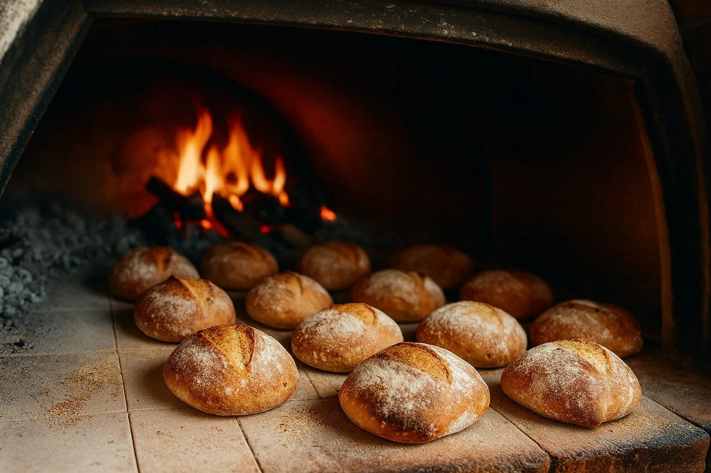

El secreto definitivo de un buen horneado reside en la precisión matemática de la
receta y en el control absoluto de la temperatura del horno. A diferencia de la cocina tradicional,
donde se
puede improvisar al gusto, la panadería y la repostería son ciencias exactas.

1.Precalienta el horno: la mayoría de las veces es necesario precalentar el horno unos 15 minutos
antes de
introducir cualquier alimento. Piensa en cuando vas a asar una carne; antes de empezar, calientas
una sartén
con un poco de aceite y posteriormente, añades el filete que quieres cocinar.
2.Usa los
recipientes
adecuados a la hora de hornear: debes saber que los recipientes que puedes meter al horno son de
acero
inoxidable o de vidrio, preferiblemente. Además, es importante que uses guantes o toallas secas para
sacar
del horno los alimentos y evitar quemaduras.
3.Coloca tus preparaciones a la altura correcta: aunque la
temperatura del horno aumenta de abajo hacia arriba, el vapor concentrado y a más altos grados se
concentrará en la parte superior. Si necesitas que unas verduras se gratinen, lo más recomendable es
poner
la bandeja en la parte alta del horno. En cambio, las preparaciones que toman más tiempo, como
cualquier
tipo de carne, se deben colocar en la parte inferior. Por último, si vas a cocinar un pescado, el
espacio
central será el más adecuado para que se cocine de manera uniforme.
4.Ten en cuenta las
texturas de las
preparaciones: por ejemplo, entre más blanda sea la verdura, menos tiempo tomará para su cocción.
Existen
otras más duras como la zanahoria o la calabaza que necesitan más tiempo. En caso de que necesites
cocinar
varias de diferente tipo, puedes meter en una bandeja las duras y luego, las más blandas.
Recuerda que los tiempos y temperaturas de cocción pueden variar según el horno, así que asegúrate de
seguir las
indicaciones de cada receta y hacer ajustes si es necesario. Además, siempre verifica la aptitud de los
recipientes utilizados para asegurarte de que sean adecuados para el horno y la temperatura requerida.
Síguenos en nuestras redes sociales: